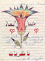

PERSONAL STORIES
"Hopefully we will meet again soon in Paradise..."
Ramsey Mohammed Khalil Al-Ustaz, "Abu Khalid", aged 21, Sheikh Radwan, Gaza Strip.
Right: Ramsey in a Gaza photo studio.
Ramsey was born 24 December 1974 and died a hero at age 21, on 26 September 1996. He was originally from Al-Majkal but was most recently living in the Sheikh Radwan neighbourhood of Gaza. He lived there with his mother and his brother Khalil. His father Mohamad Khalil lived with his second wife and kids nearby.
Ramsey spent seven months in Al-Makab prison. He was the only one from the family arrested or killed. He will always be remembered for his cheerful dedication to the Palestinian cause. A letter from prison to his relatives reflects this.
Left: The cover of Ramsey's letter from Al-Makeb Prison. Click to get to the letter.
Ramsey liked to listen to music and write. His favorite singer was Najwa Karam. He also enjoyed drawing. His brother Khalil and friend Nasser remember when Ramsey was younger, he would sit with a notebook and draw anything he saw. Whenever he wanted to sit and draw or write he would go outside to quiet places. They also remember how much he loved to swim and how they used to go out to the sea together often.
Ramsey never liked school, probably the result of a particular event at school. The teacher asked who had done their homework. Ramsey said that he had not. The teacher became very angry and beat him. His friends remember how he wanted to fight back and resist the teacher but he restrained himself. This incident influenced him greatly.
He quit school and started to work. He did many odd jobs but finally became a tailor. He took great pride in his work and everyone remembers how hard he worked, only producing the best quality. Ramsey never missed a chance to help his friends. He would design clothes for them, charging them less for the work. He also tried to help poor people as much as he could by not charging them. He was as generous as they come.
Above: Ramsey (front right) and friends.
Ramsey was also known for being sociable. He liked to walk around Gaza and attend parties. His brother remembers how he was always visiting his family and was always present for special occasions. He fulfilled his duties well. He worked hard and gave his mother the money, never refusing any request from her. Whenever he came home, he would try his hardest to make his mother and the rest of the family laugh, always managing to bring smiles to their faces. He especially liked teasing his grandmother because he could provoke her into yelling. His friends remember how hard it was to provoke Ramsey, because he always had a smile on his face.
His brother remembers one of his funniest memories of Ramsey. One day they were walking around Gaza and they saw fighting at the checkpoint. So they joined in and started throwing rocks at the Israeli soldiers. The soldiers saw them and started chasing them. But the boys escaped into a house and asked the owners to hide them. The owners said that they could hide in their oil store. While the boys were hiding, they accidently spilled oil all over themselves. The Israeli soldiers searched a nearby house, didn't find the boys, and left. When the boys came out of their hiding spot and into the street they were dripping with oil. The whole street was filled with people, who couldn't stop laughing at the two bedraggled kids.
Ramsey was always hoping for a better future. He was preparing himself for marriage by saving money. He wished to be rich not for himself but so he could help poor people. In Gaza, he saw poverty everywhere and knew the suffering of the poor. He wanted to help in some way.
One of Ramsey's friends remembers how happy he was when Algeria announced that Palestine was a country on 15 November 1988. People were raising Palestinian flags everywhere. There was hope in Ramsey's eyes when he looked up at these flags. As Ramsey watched the flags, he saw that one had come loose and was about to fall into the water. He called to his friends to try and catch it before it went into the water but it was too late. Without hesitation Ramsey jumped in after it. As he came out of the water with the flag above his head, everyone applauded.
Ramsey's life was cut short by a bullet on Thursday 26 September 1996. That day he had heard on the news that there was trouble at the Israeli checkpoint. People were hurt and the hospital needed blood. Without hesitation, Ramsey went to the hospital to give blood. He ran into his brother Khalil at the hospital. Khalil asked him to please go home when he was done and Ramsey agreed.
But while he was in the hospital Ramsey saw dead and wounded people all around and it infuriated him. He decided to help as much as he could. When he was finished giving blood, he went to the checkpoint to help carry out the dead and injured people. He was helping someone who had been shot into an ambulance when he himself was shot in the back of the head by an Israeli soldier. Ramsey went there to help and he ended up getting shot himself, a true hero.
He was taken immediately to the hospital where he stayed for twelve days. Throughout those twelve days several attempts were made to transfer him to a more efficient hospital, in Israel, that could take care of him better. The request was refused by the Israeli soldiers at the checkpoint. Their explanation: he was a threat and it was dangerous to allow him into Israel. After twelve days, a doctor from the hospital finally managed to convince the soldiers to let him through and Ramsey was transferred to a hospital in Israel. Alas, it was too late. He died two days later.
His final requests show his generosity. He had requested that two sheep be killed and that the meat, and candy, would be given to the poor. Ramsey left behind many people who loved him and left many happy memories in everyone's minds. Ramsey died for what he believed in, helping others.
Perhaps the best eulogy for Ramsey is one prepared by a friend for his funeral...
You who reject the occupation are all heros. I identify with the dead, the wounded and the imprisoned. I am behind those who try to bring freedom in the darkness. I am proud of you. I am proud that Jerusalem is our capital in the Holy Land.
Abu Khalid (Ramsey), I didn't get to say good bye to you. But I will see you and the other victims once again in Paradise. You are with us everywhere. You refused to die passively. Abu Khalid, you are not alone.
Gathered here are all your brothers who have come to congratulate you on your heroism. God chose you for a reason and you had faith in that reason. Some write with their pen for the country, some speak for the country, and some give their blood for the country. But you, Abu Khalid, gave your life which is the greatest gift of all.
To all the victims, you gave your lives for your country, God, and Jerusalem. You are martyrs of the struggle for Jerusalem and the Intifada. You died to light the road and to build a bridge to Jerusalem.
To the victims who supported the PLO and who were leaders in the Intifada, we are worth nothing without leaders. We will die standing on and following this road until we reach our aim or die trying. We will liberate Palestine and all its cities.
Comrades, we built this country with a great deal of struggle and we should be proud. We should live in safety under the PA. God was generous to create us in this Holy Land and I say to Netanyahu, that all the martyrs are now in Paradise and all the houses that were demolished will be castles in Paradise for us.
God says we are strong and Mohammad the prophet said we must be patient. We have struggled and will continue to do so. We will die standing and never surrender.
Abu Khalid, our pens are incapable of writing, our minds are incapable of thinking, and our tongues are incapable of speech. If we fill the sea with ink, it would not be enough to write how great you were in life. I won't cry for you because you are not dead inside me. My memories of you live on. Your memories are painted on our hearts so we won't cry for you. The heavens are proud of you and we congratulate you on the heroic giving of your life.
Poem for Ramsey
Enough crying has been done for you,
You are gone but you are in Paradise,
You are a man who left behind people who have done less than you,
You walked the road of struggle which ended in death,
We are proud of you and your blood calls out to God,
You plant hope inside us with your life and death,
You left life and people who think life is endless,
You lit our lives and still do,
Your light moves the darkness,
Hopefully we will meet again soon in Paradise.
Back to PERSONAL STORIES or on to the NEXT STORY